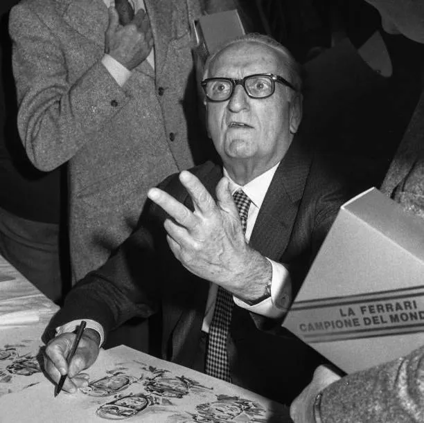
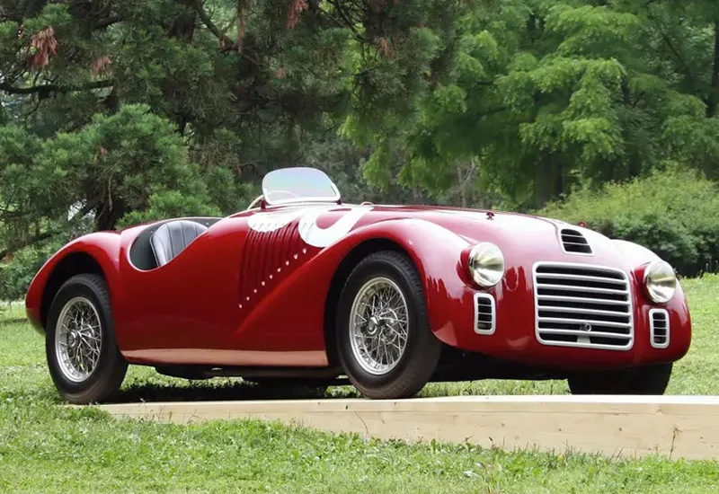

Le origini della Ferrari
La storia della Ferrari è strettamente legata alla figura di Enzo Ferrari, fondatore dell'azienda e appassionato di automobili e competizioni.
Enzo Ferrari iniziò la sua attività nel mondo delle corse automobilistiche e nel 1929 fondò la Scuderia Ferrari a Modena.
Inizialmente la Scuderia Ferrari partecipava alle competizioni utilizzando automobili Alfa Romeo. L'attività sportiva fu fondamentale per lo sviluppo della futura casa automobilistica.
Enzo Ferrari

Enzo Ferrari è la figura centrale nella storia del marchio Ferrari.
La sua passione per le corse automobilistiche lo portò a creare una squadra dedicata alle competizioni. Con il passare degli anni, questa esperienza sportiva contribuì alla nascita della Ferrari come costruttore di automobili.
Il suo obiettivo era creare automobili capaci di distinguersi per prestazioni, tecnologia e carattere sportivo.
Scopri di più su Enzo Ferrari
Enzo Ferrari rimane una delle figure più importanti nella storia dell'automobilismo italiano.
La nascita dell'azienda
Nel 1939 Enzo Ferrari lasciò la sua posizione presso Alfa Romeo e iniziò una nuova attività automobilistica.
La nuova società fu inizialmente chiamata Auto Avio Costruzioni.
Nel periodo successivo l'attività si sviluppò nella zona di Maranello, che sarebbe diventata il centro della produzione Ferrari.
Maranello sarebbe diventata uno dei luoghi più importanti nella storia Ferrari.
Il 1947: nasce la Ferrari moderna
Il 1947 rappresenta uno degli anni più importanti nella storia Ferrari.
In quell'anno Enzo Ferrari mise in moto la 125 S, la prima automobile a portare il nome Ferrari.

La 125 S utilizzava un motore a dodici cilindri, una caratteristica che sarebbe diventata importante nella tradizione tecnica del marchio.
La vettura fece il suo debutto in gara nel 1947 e nello stesso anno ottenne diverse vittorie.
Anno di nascita della Ferrari moderna.
Le prime automobili stradali
Dopo le prime esperienze nelle competizioni, Ferrari iniziò a sviluppare anche automobili destinate alla strada.
Nel 1948 venne prodotta la Ferrari 166 Inter, considerata la prima automobile stradale della casa.
Il design divenne progressivamente una parte fondamentale dell'identità Ferrari.
Le automobili Ferrari iniziarono così a combinare il mondo delle competizioni con quello delle automobili stradali.
Ferrari e la Formula 1
Nel 1950 Ferrari iniziò la sua partecipazione al Campionato del Mondo di Formula 1.
La Scuderia Ferrari partecipò al secondo Gran Premio della storia del campionato, a Monaco.
La Formula 1 divenne una parte fondamentale della storia Ferrari e contribuì allo sviluppo delle tecnologie e delle automobili da competizione.
Nel 1952 Ferrari conquistò il suo primo titolo mondiale Costruttori.
La competizione è una parte fondamentale della storia e dell'identità Ferrari.
Gli anni '50 e '60
Durante gli anni Cinquanta e Sessanta Ferrari continuò a sviluppare automobili sportive e da competizione.
In questo periodo nacquero alcuni modelli diventati famosi nella storia dell'automobilismo, tra cui la famiglia Ferrari 250.
Nel 1962 venne presentata la famosa Ferrari 250 GTO, una delle automobili più conosciute nella storia del marchio.
Le vittorie nelle competizioni contribuirono a rendere Ferrari sempre più conosciuta a livello internazionale.
Gli anni '70 e '80
Negli anni Settanta Ferrari continuò a sviluppare nuove soluzioni tecniche e nuovi modelli.
Nel 1975 venne presentata la Ferrari 308 GTB, dotata di un motore V8.
Negli anni Ottanta Ferrari aumentò la produzione di modelli speciali e supercar.
Tra i modelli più famosi di questo periodo troviamo la 288 GTO e la Ferrari F40.
L'eredità di Enzo Ferrari
Enzo Ferrari morì nel 1988, ma la sua filosofia continuò a influenzare l'azienda.
Il suo nome rimane legato a una filosofia basata sulla competizione, sulla ricerca tecnologica, sulle prestazioni e sul design.
Ferrari ha continuato negli anni a sviluppare automobili sportive e a partecipare alle competizioni automobilistiche.
Tradizione, innovazione e passione.
La Ferrari moderna
Oggi Ferrari è conosciuta a livello internazionale per le sue automobili sportive, per la Formula 1 e per la ricerca tecnologica.
La casa automobilistica continua a sviluppare nuove tecnologie per migliorare le prestazioni, l'efficienza e l'esperienza di guida.
La storia Ferrari continua quindi a unire tradizione, innovazione e motorsport.
- La storia Ferrari continua.
La storia in breve
- 1929 - Nasce la Scuderia Ferrari.
- 1939 - Enzo Ferrari avvia una nuova attività automobilistica.
- 1947 - Nasce la Ferrari 125 S.
- 1948 - Viene prodotta la Ferrari 166 Inter.
- 1950 - Ferrari entra nel Campionato del Mondo di Formula 1.
- 1952 - Ferrari conquista il primo titolo mondiale Costruttori.
- 1962 - Viene presentata la Ferrari 250 GTO.
- 1975 - Viene presentata la Ferrari 308 GTB.
- 1987 - Viene presentata la Ferrari F40.
- 1988 - Muore Enzo Ferrari.
Una storia costruita sulla passione
La storia della Ferrari è il risultato di molti anni di lavoro, competizioni, ricerca e innovazione.
Dalla piccola Scuderia fondata da Enzo Ferrari fino al marchio internazionale di oggi, Ferrari ha mantenuto un forte legame con il mondo delle corse automobilistiche.